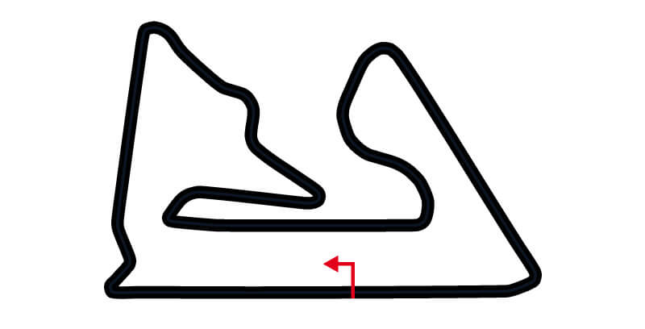
El Circuito Internacional de Baréin, más conocido como Sakhir, es un autódromo localizado en la ciudad de Manama,
Baréin, sede actual del Gran Premio de Baréin de Fórmula 1.
La construcción del circuito para poder albergar una fecha de la temporada de Fórmula 1 fue un objetivo nacional para
Baréin.
Los organizadores del Gran Premio temieron no llegar a terminar a tiempo las construcciones necesarias para la
realización del evento, y solicitaron al jefe de F1 Bernie Ecclestone la postergación para 2005. Ecclestone se negó,
y la carrera se disputó a pesar de que el autódromo no estaba terminado en su totalidad.
Uno de los eventuales problemas que se temían en el evento, tenía que ver con que el circuito está localizado en el
medio del desierto, con lo cual los vientos podrían arrastrar arena hacia el trazado y alterar así el funcionamiento
de las máquinas. De todas formas, los organizadores del Gran Premio lograron mantener la arena fuera de la pista,
mediante la utilización de un adhesivo que se rocía en las arenas que rodean el trazado.
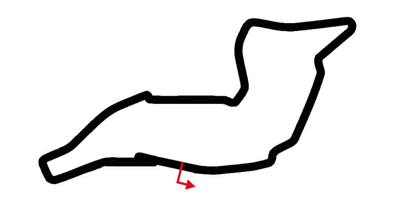
El Autodromo Enzo e Dino Ferrari es un autódromo de 4,9 km situado en Imola, región de Emilia-Romaña,
Italia, unos 30 km al sureste de la ciudad de Bolonia. Es uno de los principales de su país, habiendo
albergado carreras de numerosos campeonatos mundiales y europeos de automovilismo de velocidad y
motociclismo de velocidad además de italianos.
El circuito llevaba originalmente el nombre de Autodromo di Castellaccio. Luego se llamó Autodromo
Dino Ferrari en honor a Dino Ferrari, hijo de Enzo Ferrari que falleció en 1956 a los 24 años. Cuando
Enzo murió en 1988, el nombre pasó a ser el actual.
Es un cirucito historicamente trágico y peligroso, ya que se han producido numerosos accidentes y
algunos de ellos fatídicos, como es el caso de la muerte del campeón del mundo Ayrton Senna cuando
se estrelló con el muro en la curva de Tamburello en 1994.
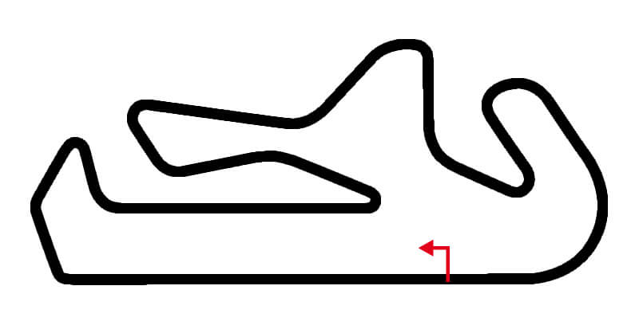
El Autódromo Internacional do Algarve es un autódromo situado en Portimão, región de Algarve,
Portugal. Se acabó de construir en octubre de 2008, con un coste de 195 millones de euros y fue
inaugurado el 2 de noviembre de ese año coincidiendo con la celebración de la carrera final del
Campeonato Mundial de Superbikes. El circuito ha sido visitado por el A1 Grand Prix, la Superleague
Formula, la GP2 Series, la World Series by Renault, el Campeonato Mundial de Superbikes, el
Campeonato Mundial de Turismos, la Superstars Series, el Campeonato FIA GT, la Le Mans Series y el
Open Internacional de GT. Debido a la reestructuración del calendario causada por la crisis
sanitaria de la COVID-19, en 2020 recibe por primera vez a la Fórmula 1.
Algarve está homologado por la Federación Internacional del Automóvil y la Federación Internacional
de Motociclismo para carreras internacionales. El trazado más largo tiene una extensión de 4.692
metros.
Al igual que Jerez y Cataluña, Algarve ha sido utilizado frecuentemente para los entrenamientos de
Fórmula 1 durante el invierno europeo. Durante 2020 y 2021 albergó el Gran Premio de Portugal de
Fórmula 1 y MotoGP.
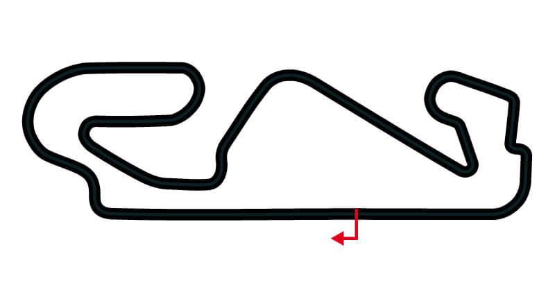
El Circuito de Barcelona-Cataluña (en catalán y oficialmente, Circuit de Barcelona-Catalunya),
también conocido como Circuito de Montmeló o Circuito de Barcelona, es un autódromo situado en las
poblaciones de Montmeló (sectores 1 y 2) y Granollers (sector 3), en la provincia de Barcelona,
comunidad autónoma de Cataluña, España. Inaugurado en el año 1991, tiene un aforo de 131.000
espectadores, y acoge diversas competiciones entre las que destacan el Gran Premio de España de
Fórmula 1 y el Gran Premio de Cataluña de Motociclismo del Campeonato Mundial de Motociclismo.
También es uno de los circuitos más utilizados para los ensayos de los diferentes equipos europeos
durante el receso de invierno.
El circuito es una instalación pública, cuya titularidad pertenece a un consorcio formado por la
Generalidad de Cataluña, el Real Automóvil Club de Cataluña (RACC), el Ayuntamiento de Montmeló y
el Ayuntamiento de Barcelona.
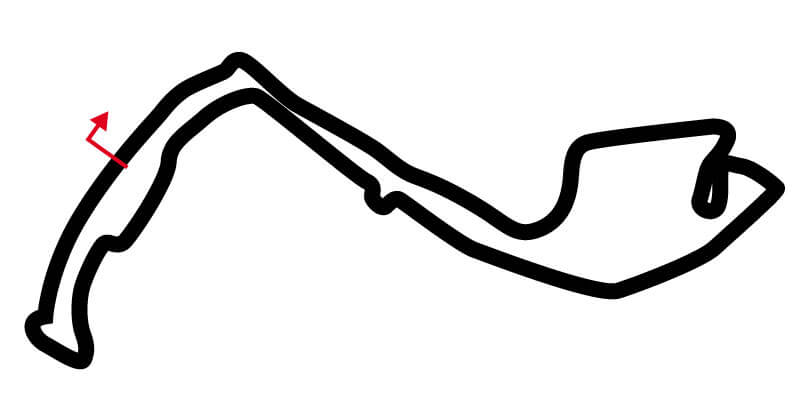
El Circuito de Mónaco (en francés: Circuit de Monaco), conocido también como Circuito de Monte Carlo, es un circuito
urbano de carreras ubicado en el Principado de Mónaco que alberga el Gran Premio de Mónaco de Fórmula 1 y de Fórmula E.
Fue fundado en 1920 por Antony Noghès.
Debido a su especial configuración con curvas cerradas y rectas cortas, lo que prima en él es la habilidad de los
pilotos frente a la potencia de los motores.
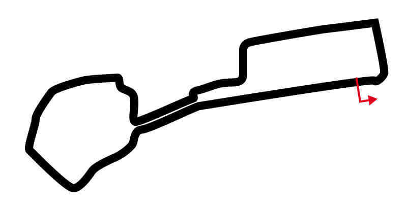 El Circuito callejero de Bakú es un circuito urbano de carreras construido en la ciudad de Bakú, Azerbaiyán, en el Baku Boulevard. Acogió el Gran Premio de Europa de 2016 de Fórmula 1. A partir del 2017, la FIA, luego de ver los buenos resultados obtenidos en el circuito callejero de Bakú, ha concedido el cambio de la denominación de Gran Premio de Europa para que a partir de 2017 se dispute como Gran Premio de Azerbaiyán.
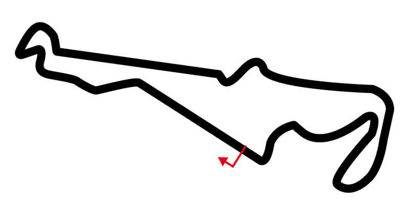
El Circuito Paul Ricard es un autódromo situado en Le Castellet (Alpes de Alta Provenza) en la región de Provenza-
Alpes-Costa Azul, Francia. Durante años fue considerado el circuito más seguro de su época. El circuito tenía tres
posibles trazados, un aeropuerto y una zona industrial. La zona más prominente del trazado es la recta Mistral, de
más de kilómetro y medio de longitud, que va seguida de la curva abierta Signes.
Fue sede de numerosas ediciones del Gran Premio de Francia de Fórmula 1 desde 1971 hasta 1990, y del Gran Premio de
Francia de Motociclismo del Campeonato Mundial de Motociclismo desde 1973 hasta 1999. También albergó desde 1978
hasta 1999 el Bol d'Or, una carrera clásica del Campeonato Mundial de Motociclismo de Resistencia, el Campeonato
Mundial de Superbikes en 1989, cuatro fechas del BPR Global GT Series en la década de 1990 y el Campeonato de la
FIA de Sport Prototipos en 1998.
Más recientemente, el Campeonato FIA GT visitó Paul Ricard en 2006, 2009 y 2010, y Le Mans Series disputó en 2010
una carrera de 8 horas. Además, Paul Ricard es sede de muchas de las pruebas de invierno de equipos de Fórmula 1,
y es pista de pruebas oficial de varias categorías europeas y mundiales, tales como la GP2 Series, la World Series
by Renault, el Campeonato FIA GT y la Le Mans Series.
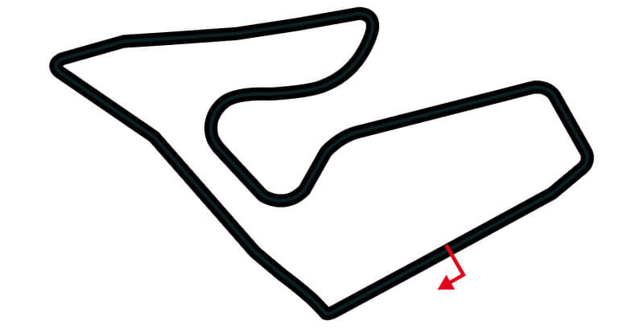 Red Bull Ring es un autódromo ubicado en la villa de Spielberg, cerca al poblado de Zeltweg, estado de Estiria, Austria, a unos 50 km al oeste de la ciudad de Graz. Ha recibido varios de los principales campeonatos mundiales y europeos de deporte motor. El nombre original del circuito fue Österreichring, que traducido sería "circuito de Austria". Después de su remodelación en 1996, fue renombrado a A1-Ring debido al patrocinio de la telefónica A1 Mobilkom. En 2010, el fabricante de bebidas Red Bull adquirió el circuito y le puso el nombre actual.
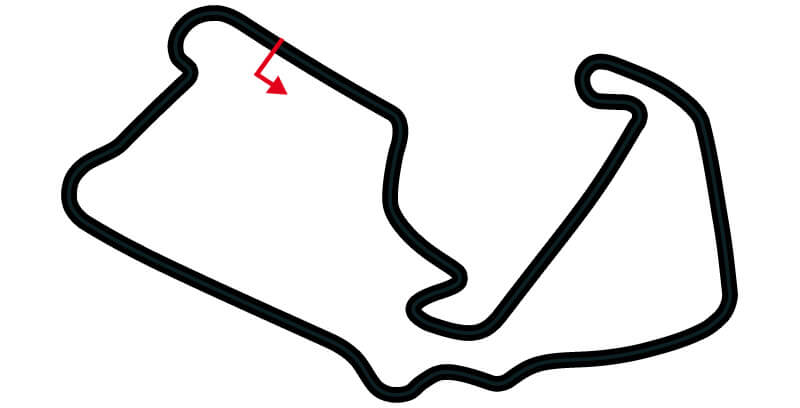
El Circuito de Silverstone es un autódromo localizado en Silverstone, condado de Northamptonshire, en Inglaterra,
Reino Unido. Es uno de los circuitos más prestigiosos de Europa, al haber albergado el Gran Premio de Gran Bretaña de
Fórmula 1, los 1000 km de Silverstone del Campeonato Mundial de Resistencia, y el Gran Premio de Gran Bretaña de
Motociclismo del Campeonato Mundial de Motociclismo, entre otras pruebas internacionales.
La finca era un aeródromo inactivo después de la Segunda Guerra Mundial, y las pistas de aterrizaje comenzaron a
utilizarse para carreras en 1947. Las tres pistas de despegue, trazadas en el clásico formato triangular de la época,
aún pueden apreciarse dentro del circuito.
El Gran Premio de Gran Bretaña se disputó en Silverstone desde 1948 hasta 1954. Luego rotó entre los circuitos de
Silverstone, Aintree y Brands Hatch entre los años 1955 y 1986. La prueba se realiza permanentemente en Silverstone
desde 1987. La edición 1950 fue el primer Gran Premio puntuable para el campeonato de Fórmula 1 de la historia.
El 30 de septiembre de 2004, el presidente del British Racing Drivers Club, Jackie Stewart, anunció que la carrera
no sería incluida en el calendario provisional de la temporada 2005 de Fórmula 1, y aunque finalmente fuera corrida,
la misma no se realizaría en Silverstone. No obstante, el 9 de diciembre del mismo año se alcanzó un acuerdo con
Bernie Ecclestone, el dueño de Fórmula 1, según el cual el Gran Premio se continuaría realizando en Silverstone
hasta 2009, donde el Gran Premio de Inglaterra se celebraría en Donington Park. Este cambio no se concretó, y la
Fórmula 1 continúa visitando Silverstone.
Al ser uno de los principales circuitos del país, Silverstone ha recibido a campeonatos internacionales tales como
el Campeonato Mundial de Turismos, el Campeonato Mundial de Motociclismo de Resistencia, el Campeonato Mundial de
Superbikes, la GP2 Series, el Campeonato FIA GT y la World Series by Renault. Además, es sede habitual de los
campeonatos británicos de Fórmula 3, turismos, gran turismos y de superbikes, entre otros.
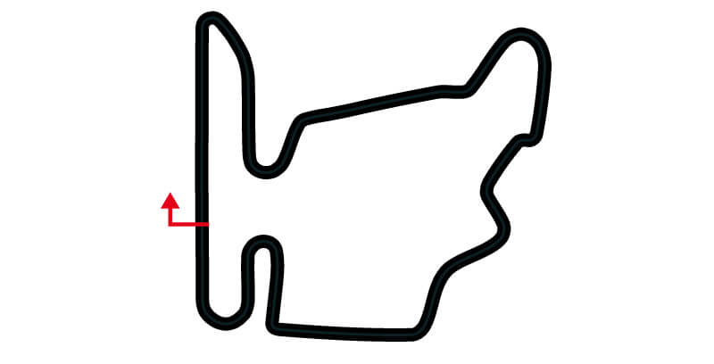
Hungaroring es un autódromo localizado en Mogyoród, Hungría, a 30 kilómetros del centro de la ciudad de Budapest. La
construcción del circuito empezó el 1 de octubre de 1985 y fue terminado en ocho meses. El trazado actual tiene una
longitud de 4.381 metros; las rectas más cortas que las de otros circuitos semejantes hacen que los adelantamientos
en carrera no sean frecuentes.
Desde 1986, Hungaroring alberga anualmente el Gran Premio de Hungría de Fórmula 1, acompañado entre 1998 y 2004 por
Fórmula 3000 Internacional y desde 2005 por GP2 Series. Hungaroring es el primer circuito tras el Telón de Acero que
visitó la Fórmula 1. Desde su incorporación al calendario de Fórmula 1, ha sido uno de los autódromos más lentos
junto con Buenos Aires y Jerez.
Además de estos certámenes, el circuito ha acogido al Campeonato Mundial de Superbikes desde 1988 hasta 1990; el
Campeonato Mundial de Motociclismo en 1990 y 1992; el Campeonato FIA GT desde 1998 hasta 2001, en 2006 y 2009; la
Fórmula 3000 Europea en 2006 y 2007; la World Series by Renault y Fórmula Renault 2.0 Europea desde 2007; y Fórmula
Master Internacional en 2009.
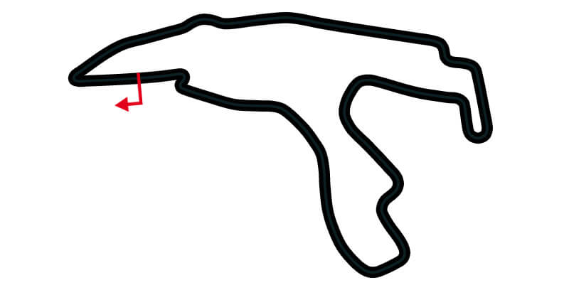
El Circuito de Spa-Francorchamps (en francés Circuit de Spa-Francorchamps) es un circuito de carreras situado cerca
de las localidades de Spa, Francorchamps, Malmedy y Stavelot en la provincia de Lieja, Bélgica. Es el circuito más
importante del país, y tanto pilotos como seguidores de las diversas disciplinas de automovilismo de velocidad
suelen mostrar su preferencia por él.
Spa-Francorchamps se ha caracterizado desde sus orígenes por lo impredecible de las condiciones meteorológicas,
que muchas veces hacen que una parte de la pista esté seca mientras en el otro extremo llueve en forma torrencial.
La sección más característica del circuito es la combinación de Eau Rouge y Raidillon. Tras atravesar la lenta
horquilla de La Source, los pilotos aceleran por una recta en bajada tras lo cual deben encarar una subida con una
serie de curvas zigzagueantes (la primera de las cuales es Eau Rouge, y el resto de la combinación Raidillon) que
finalizan en contracurva ciega. El gran desafío para todo piloto es tomar Eau Rouge con el acelerador a fondo, lo
cual se dice que se ha simplificado en los últimos años debido al uso de tecnología moderna en los monoplazas. Aun
así, siguen siendo muy pocos los pilotos que la toman pisando a tope su acelerador.
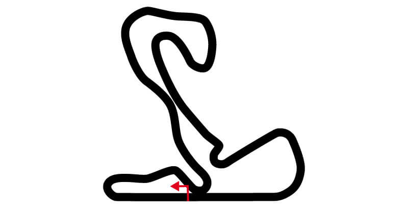
El Circuito de Zandvoort, oficialmente Circuit Park Zandvoort, es un autódromo situado cerca de Zandvoort y Haarlem,
Países Bajos, sobre el Mar del Norte, unos 15 km al oeste de la ciudad de Ámsterdam. El circuito fue diseñado por
John Hugenholtz. Fue inaugurado el 7 de agosto de 1948 con una longitud de aproximadamente 4200 metros, la cual
varió ligeramente a lo largo de las décadas. A finales de los 1980, Zandvoort fue remodelado de forma radical y
acortado a 2.526 metros. En 1999 se recuperaron secciones del trazado original, y su extensión máxima aumentó a
4.307 metros.
La primera carrera de Gran Premio en Zandvoort fue en 1949. El circuito fue sede del Gran Premio de los Países Bajos
de puntuable para la Fórmula 1 en todas sus ediciones, desde 1952 hasta 1985. En esa época, la Fórmula 2 Europea y
la Fórmula 3000 Internacional también compitieron allí. Más recientemente, Zandvoort albergó una fechas puntuables
del A1 Grand Prix, WTCC, WTCR, Fórmula 3 y DTM.
En 2019, el circuito fue anunciado para el calendario propuesto de la temporada 2020 de Fórmula 1, siendo sede
nuevamente del Gran Premio de los Países Bajos. Las obras de reacondicinamiento del lugar incluyen reasfaltado de
la pista, modificación en las curvas 1, 3 y 14, ampliación y asfaltado de escapatorias, colocación de tribunas
temporales y creación de nuevos accesos y edificios para el público.
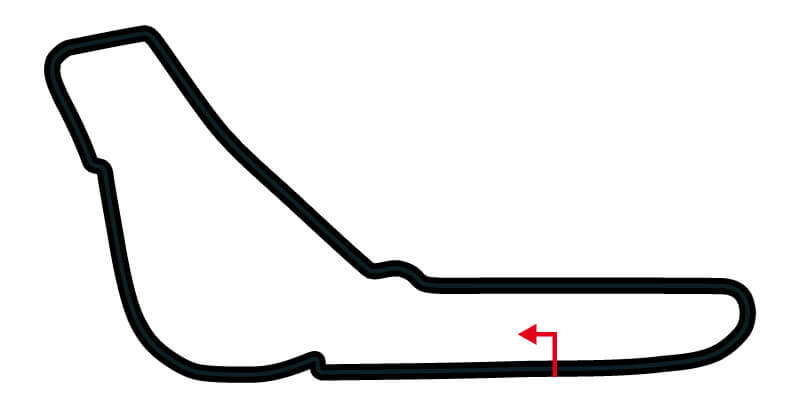
El Autodromo Nazionale di Monza es un autódromo situado en el parque de la villa real de Monza en las cercanías de
Monza, región de Lombardía, Italia, unos 20 km al norte de la ciudad de Milán.
El autódromo consta de tres pistas: el trazado de 5.793 metros usado para los Grandes Premios, la pista Junior que
se extiende a lo largo de 2.405 metros, y un circuito peraltado de velocidad de 4.250 metros hoy en desuso. También
existe un cuarto trazado, de 10 000 metros (con las chicanes construidas si se volviera a usar mediría 10.043 metros),
que es combinación del circuito de GP y del óvalo, que se usó en los primeros años de F1 en Monza.
El circuito es reconocido por albergar el Gran Premio de Italia de Fórmula 1 (solamente una edición se hizo en otra
pista), y se caracteriza por el alto porcentaje del trazado que los pilotos recorren con el acelerador a fondo,
debido a las largas rectas. El récord actual de la pista, fue marcado por Lewis Hamilton en el Gran Premio de
Italia de 2020, con un tiempo de 1:18.887.
El circuito, en sus diferentes versiones, ha albergado todas las temporadas de Fórmula 1 de la historia un Gran
Premio, excepto en 1980. Ese año, el Gran Premio de Italia se trasladó a Imola porque en Monza se realizaron
importantes obras de remodelación de las instalaciones.
La Fórmula 3000 Internacional, la GP2 Series y la FIA F2 han disputado una carrera en Monza desde 2001 como soporte
de Fórmula 1, además de la GP3 y FIA F3. La Fórmula 3000 Internacional también visitó la pista en 1988 y 1990, y su
predecesora, la Fórmula 2 Europea, lo hizo en 1973. Otros campeonatos de monoplazas que han corrido en Monza son la
Auto GP, la World Series by Renault, la Superleague Formula, la Fórmula Master Internacional, la Fórmula 3 Británica
y la Fórmula 3 Española, además de la Fórmula 3 Italiana y la Fórmula Renault Italiana. Además es celebre por albergar
la Carrera de los Dos Mundos, una prueba de 500 millas realizada en el trazado oval entre 1957 y 1958, donde se
enfrentaron Fórmula 1, Indy y deportivos.
Los 1000 km de Monza es una de las carreras de resistencia más prestigiosas de Europa, luego de las 24 Horas de Le
Mans y junto con las carreras de idéntica longitud de Nürburgring, Silverstone y Spa-Francorchamps. Fue disputada
desde 1965 hasta 1975, desde 1980 hasta 1985, y en 1987 y 1988, como parte del Campeonato Mundial de Resistencia; en
1997 y 1998 como parte del Campeonato Italiano de Gran Turismos; en 2001 como carrera puntuable del Campeonato de la
FIA de Sport Prototipos; y en 2004, 2005, 2007 y 2008 como parte de la Le Mans Series. El Campeonato Mundial de
Resistencia y el Campeonato de la FIA de Sport Prototipos también disputaron en Monza carreras más cortas.
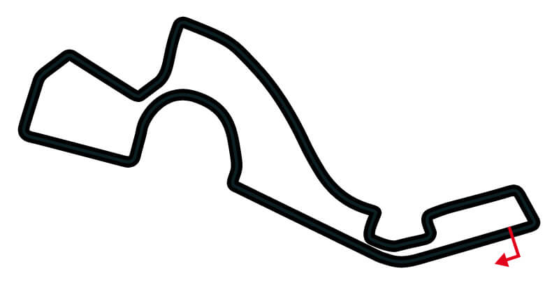
El Autódromo de Sochi, anteriormente denominado Circuito del Parque Olímpico de Sochi es un circuito de carreras de
Fórmula 1 de 5,8km construido en el Parque Olímpico del balneario de Sochi, Krai de Krasnodar, Rusia.
Alberga el Gran Premio de Rusia de Fórmula 1 desde 2014, comenzando un contrato de siete años; sin embargo, al
principio se presumía de que la carrera se podría retrasarse hasta 2015 si el Comité Olímpico Internacional
consideraba que los preparativos para la carrera interfieren con la celebración de los Juegos Olímpicos de invierno
de Sochi 2014, sin embargo, el comité organizador de la competencia dio luz verde para albergar el Gran Premio en la
temporada 2014 como se tenía al principio.
La construcción del Circuito del Parque Olímpico de Sochi, marca el final de una campaña de treinta años para tener
un Gran premio en Rusia, con planes para un Gran Premio de la Unión Soviética originarios ya en 1983, antes de ser
abandonado por "razones burocráticas" y de varios intentos fallidos en los años intermedios.
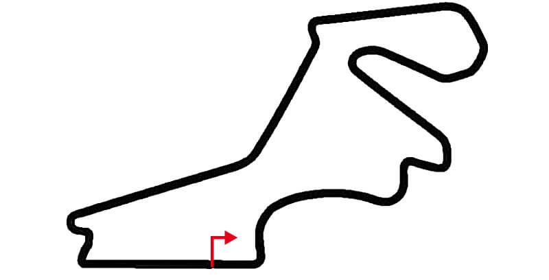
El Circuito de Estambul, también conocido como Autódromo de Estambul o Parque de Estambul, es un autódromo localizado
en el lado asiático de Estambul, Turquía. Fue construido para ser sede del Gran Premio de Turquía de Fórmula 1, que
se disputó desde 2005 hasta 2011, con la GP2 y la GP3 Series como soporte. Hizo su regreso a la categoría en 2020. En
2021 se iba a correr, pero debido a las restricciones en el país por el COVID-19, debió cancelarse y fue reemplazado
el GP de Estiria. Finalmente debido a la mejora de la situación del país, se volvió a incorporar al campeonato mundial
semanas más tarde.
Entre 2005 y 2007, el autódromo albergó carreras de numerosos certámenes internacionales, tales como el Campeonato
Mundial de Motociclismo, el Campeonato Mundial de Turismos, el Campeonato FIA GT, la Le Mans Series, el Open
Internacional de GT, el Deutsche Tourenwagen Masters, la World Series by Renault y la Fórmula Master Internacional.
Sin embargo, ninguno de estos campeonatos ha visitado Estambul desde entonces, ya que los organizadores no han
podido reunir fondos para el pago del canon a la FIA.
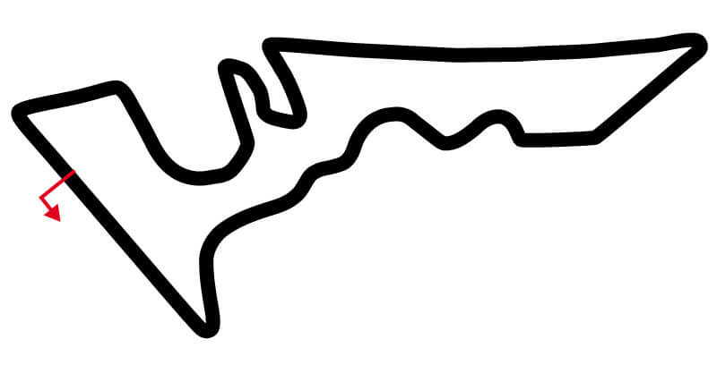
El Circuito de las Américas (oficialmente: Circuit of the Americas) es un circuito de carreras de 5.513 metros de
extensión que se terminó de construir en el año 2012 en la ciudad texana de Austin, Estados Unidos.
El objetivo de este proyecto era volver a celebrar un Gran Premio de los Estados Unidos de Fórmula 1 el cual no se
había vuelto a realizar desde el Gran Premio de los Estados Unidos de 2007 en el Indianapolis Motor Speedway. En la
temporada 2012, el 19 de noviembre se llevó a cabo la carrera de Fórmula 1 con una asistencia de 117.429 aficionados
el domingo y un total de 265,499 en el fin de semana, en donde el podio fue completado por el británico Lewis
Hamilton, el alemán Sebastian Vettel y el español Fernando Alonso. Desde ese mismo año se realiza el Gran Premio de las Américas de Motociclismo y carreras de
resistencia de diferentes campeonatos.
En 2019 se llevó a cabo la primera competencia de IndyCar Series, bajo el nombre de «IndyCar Classic». En
2020 la carrera se canceló debido a la pandemia de COVID-19 y al año siguiente, no fue incluido en el calendario.
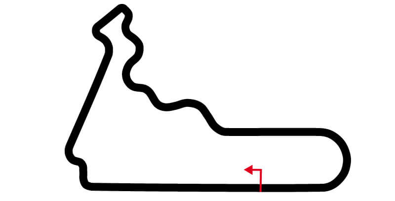
El Autódromo Hermanos Rodríguez es un autódromo ubicado en el macrocomplejo deportivo Ciudad Deportiva Magdalena
Mixhuca, en el oriente de la Ciudad de México, cerca del centro de la misma y a un par de kilómetros del aeropuerto.
Fue diseñado por el ingeniero Oscar Fernández Gómez Daza en 1955 como proyecto de tesis a falta de un autódromo en
Ciudad de México. Fue construido en 1959 y es propiedad del Gobierno de Ciudad de México.
El circuito se caracterizaba, hasta su total renovación en el 2015, por tener una superficie muy accidentada, debido
principalmente a que la Ciudad de México está ubicada en una región geológicamente activa. Además, el autódromo está
a una elevación de 2.285 m, por lo que la respiración puede resultar dificultosa para los pilotos, por otro lado los
motores sufren una considerable pérdida de potencia aunque compensada por la disminución en la densidad del aire
(Kg/m3) entre un 15 o 20 % según la temperatura, con respecto al nivel del mar, haciendo que los coches tengan menor
carga aerodinámica por lo que en el año 2016, el finlandés Valtteri Bottas registró en la recta del Autódromo
Hermanos Rodríguez una velocidad máxima de 372.5 kilómetros por hora.
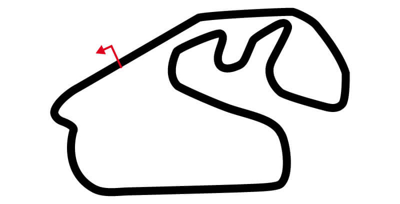
El Gran Premio de São Paulo (anteriormente Gran Premio de Brasil) es una carrera de automovilismo de velocidad
disputada en Brasil desde el año 1972, que ha sido válida para el Campeonato Mundial de Fórmula 1 desde 1973.
Actualmente se disputa en el Autódromo José Carlos Pace en Interlagos (ciudad de São Paulo); anteriormente tuvo
lugar también en el Autódromo Internacional Nelson Piquet de Jacarepaguá, Río de Janeiro.
Tradicionalmente, el Gran Premio de Brasil se disputaba en otoño, abriendo la temporada o dentro de las primeras
tres pruebas del campeonato. En 2004 se disputó a final de temporada debido a unas obras de mejora de las
instalaciones de Interlagos; sin embargo, debido al mayor éxito de público al pasar a celebrarse en primavera,
desde entonces se ha seguido disputando hacia final de temporada, a menudo como la carrera de cierre. Por ello,
ha sido sede de la definición del campeón con frecuencia en los últimos años. Ejemplos de ellos son el tricampeonato
de Vettel, el bicampeonato de Fernando Alonso, y los campeonatos de Kimi Räikkonen, Lewis Hamilton y Jenson Button.
El piloto más victorioso de la carrera es el francés Alain Prost, con seis triunfos. El argentino Carlos Reutemann y
el alemán Michael Schumacher lo siguen con cuatro conquistas cada uno. Los locatarios que ganaron el Gran Premio de
Brasil son los campeones Emerson Fittipaldi, Nelson Piquet y Ayrton Senna, al igual que José Carlos Pace y Felipe
Massa.
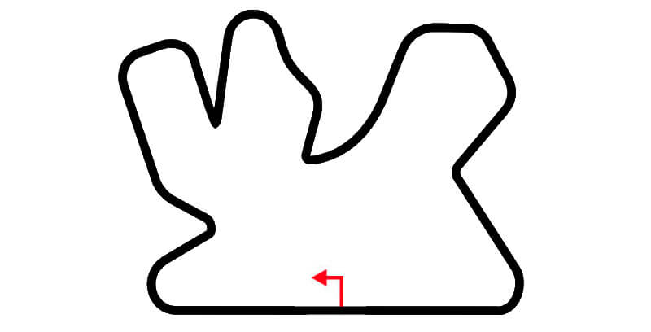
El circuito Internacional de Losail es un autódromo de 5.380 metros de longitud, situado a 20 km del
noreste de Doha, Catar.
Se construyó en 2004 para albergar el Gran Premio de Catar de Motociclismo del Campeonato del mundo de motociclismo.
En 2008 fue la primera carrera nocturna de la historia de MotoGP. Además, el Campeonato Mundial de Superbikes ha
corrido allí desde 2005 hasta 2009, y luego a partir de 2014. Por otra parte, el Campeonato Mundial de Motocross ha
corrido allí desde 2014. En el año 2021 el circuito recibió por primera vez al Gran Premio de Catar de Fórmula 1,
con un contrato de 10 años que se realizará a partir 2023 (En 2022 no se correrá debido a la celebración del Mundial
de Fútlbol en novienbre-diciembre de 2022).
 El circuito de la Corniche de Yeda es un circuito urbano de carreras ubicado en Yeda, Arabia Saudita.
Fue anunciado en diciembre de 2020 y es sede del Gran Premio de Arabia Saudita de Fórmula 1 desde 2021.
El circuito de la Corniche de Yeda es un circuito urbano de carreras ubicado en Yeda, Arabia Saudita.
Fue anunciado en diciembre de 2020 y es sede del Gran Premio de Arabia Saudita de Fórmula 1 desde 2021.
El autódromo se construyó en la corniche de Yeda y fue diseñado por el arquitecto Hermann Tilke.
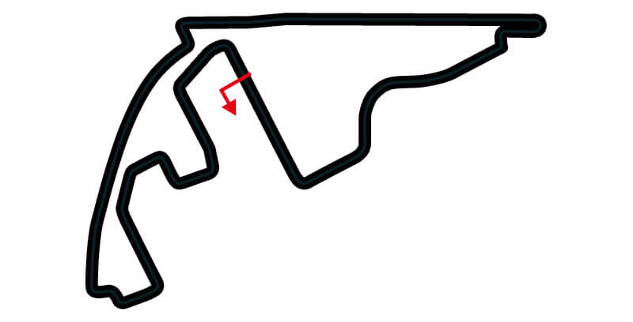
El Circuito Yas Marina es un circuito de carreras que se construyó en la Isla Yas, emirato de Abu Dabi (Emiratos
Árabes Unidos) para celebrar el Gran Premio de Abu Dabi de Fórmula 1 desde el año 2009. La pista también ha albergado
carreras del Campeonato Mundial de GT1 y el V8 Supercars, así como las 12 Horas del Golfo.
Yas Marina fue construido por la empresa Aldar, y se emplaza en un proyecto urbanístico que incluye un parque
temático, puerto deportivo, zonas residenciales, un parque acuático, zonas de deporte y ocio, un hotel con vistas
al circuito (W Abu Dhabi - Yas Island) desde las habitaciones y una torre exclusiva para los jeques al final de la
recta principal.
El trazado de Gran Premio mide 5.554 metros de longitud, y cuenta con suficientes focos de luz para celebrar carreras
de noche con iluminación de estadio, algo poco habitual en circuitos tan largos. Existe un trazado reducido a 4.700 metros.
El circuito se caracteriza por contar con novedades tecnológicas que podrán servir de referencia para otros trazados.
Una de sus mayores novedades es que el pit-lane, en la parte de la salida de boxes a pista, cruza la pista por debajo,
para conseguir más seguridad en la incorporación de los monoplazas a la misma y para aprovechar el espacio. También se
quiere aprovechar espacio colocando las gradas sobre las escapatorias del circuito, acercando de este modo la vista del
circuito a los aficionados y ahorrando espacio. Con este sistema, si algún vehículo se sale de pista, se introducirá
debajo de las posiciones del público. Sobre los boxes hay una tribuna, algo poco frecuente en los circuitos de Fórmula 1.
La pista en general es bastante rápida, con varios puntos de frenada fuerte y largas rectas.
El 24 de junio de 2021, se anunciaron cambios en el trazado, eliminando la horquilla de la curva 7 transformándose en una
frenada única y más fuerte, las curvas 11,12,13 y 14 se cambiaron por una única curva en forma de semicírculo, también se
perfilaron las curvas de la 16 a la 21, reduciendo el número de curvas de 21 a 16.